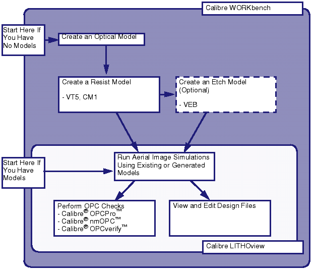

An important
concept to understand is that there are two entry points into Calibre
WORKbench.
The model creator, who must design and
calibrate new models.
The simulator user, who has their models
provided for them.
Figure 1. Calibre WORKbench and Calibre
LITHOview